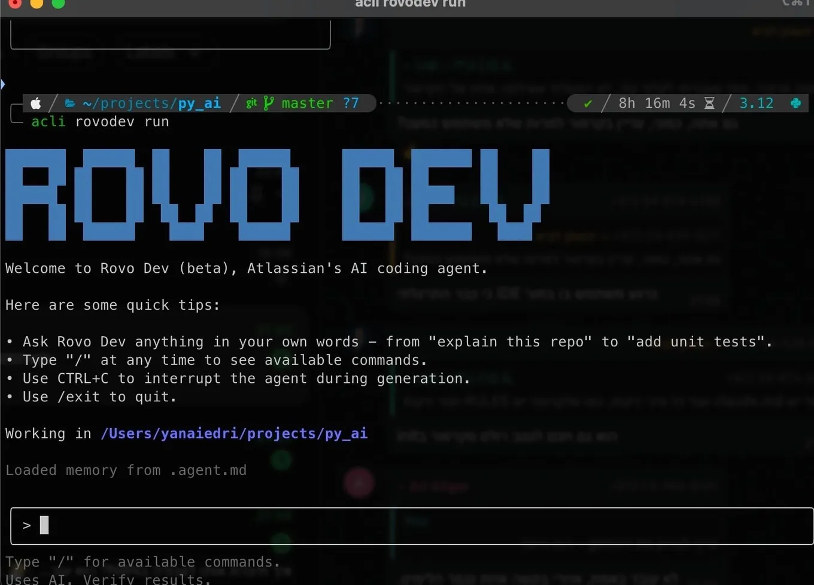

Where terminal AI agents beat Cursor
Originally posted on LinkedIn, July 16, 2025.
AI inside the terminal is the latest trend in software development. Until a year ago, the terminal still commanded a certain respect. The blinking cursor, text commands, and unforgiving syntax made it a place for professionals, something AI could explain but not really touch.
A series of tools now offer to manage the entire development process, and more, directly from your preferred terminal or CLI, whether that is Bash, ZSH, PowerShell, or something else. Claude Code, from Anthropic, can read entire projects and write complete modules from the black screen, while adding a more advanced interface inside it.
Google's Gemini CLI offers similar capabilities for free, up to 1,000 tokens per day. It is joined by Israel's Qodo, Microsoft's Copilot, the startup CodeBuff, which has offered this for some time, and Atlassian, the company behind Jira, with its ROVO AI chat in a terminal version. Warp goes further by turning the terminal itself into one large Agent. Opening it drops you directly into an AI CLI experience.
These tools are all competing to make development and configuration work easier. This is no longer just code completion or command suggestions. They are interactive assistants that understand context, build scripts, fix dependencies, interpret errors, and do it all from the command line.
Instead of memorizing terminal commands once known only by experts, developers can now use the terminal through the one language they need to know: English.
Despite the hype, and after installing and trying each of these tools, I still use Cursor in the vast majority of cases. Its interface is simple and clear. I can talk to the AI, explore the code with it, and have it carry out development tasks.
This week, I set up a GCP VM on Google's cloud to install N8N, following a recommendation from ChatGPT. The Ubuntu server was accessible only through the terminal, which made it a good opportunity to try Claude Code. After a quick installation, I asked it to configure and launch the entire environment. I then used it to download open source code from github, install it, and configure it.
For infrastructure work, tools like Claude Code have a clear advantage. For everything else, I continue to work with Cursor.
